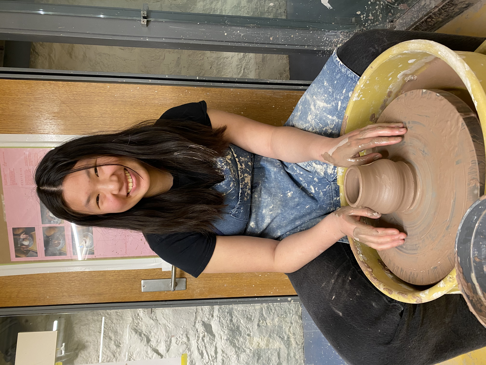

Crafts
Knitting
After some brief stints in elementary and middle school, as well as an extended crochet period, I started seriously knitting again in 2023.
Crochet
I'm mostly retired from crochet in favor of knitting. But, here are some favorite projects from my crochet era.
Pottery

There are pottery studios in some of the residential colleges at Yale, so I started teaching myself how to throw on the wheel, first in Fall 2024 and more seriously in Spring 2025.
I'd still consider myself an amateur, but here are some favorite projects.